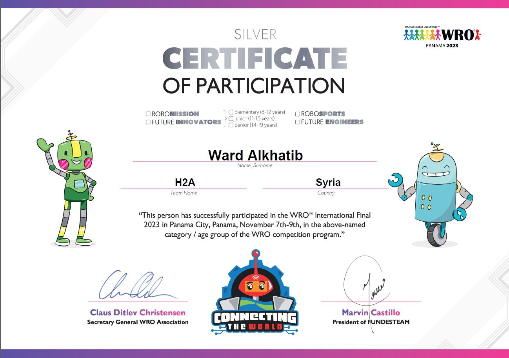
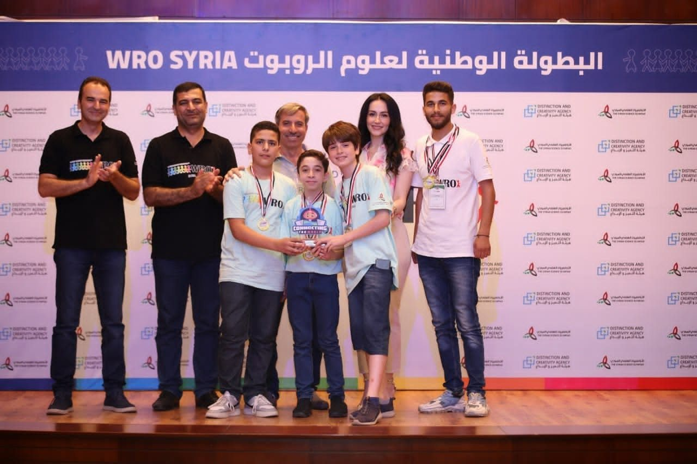

HomeالرئيسيةAchievements and awardsالإنجازات والجوائز
2020 – 20262020 – 2026
Achievements and awardsالإنجازات والجوائز
As a coach, my teams won ten medals between 2020 and 2023: two golds and seven bronzes at national championships, and a silver at the World Robot Olympiad final. In 2024 the Sumo teams I supervised took all three podium places at ARC Syria.بصفتي مدرّباً، نالت فرقي عشر ميداليات بين 2020 و2023: ذهبيتين وسبع برونزيات في البطولات الوطنية، وفضية في نهائي الأولمبياد العالمي للروبوت. وفي 2024 نالت فرق السومو التي أشرفتُ عليها المراكز الثلاثة الأولى في ARC Syria.
Results as a coach · 2020–2024النتائج بصفتي مدرّباً · 2020–2024
Ten medals and a podium sweepعشر ميداليات ومنصة كاملة
Won by the teams I trained at three championships, by category. In 2024 I supervised the Sumo teams of the National Center for the Distinguished, and they took first, second and third place.نالتها الفرق التي درّبتُها في ثلاث بطولات، مع فئة كل نتيجة. وفي 2024 أشرفتُ على فرق السومو في المركز الوطني للمتميزين، فنالت المراكز الأول والثاني والثالث.
| Yearالسنة | WRO International Finalنهائي WRO الدولي | WRO SyriaWRO سوريا | ARC Syria |
|---|---|---|---|
| 2024 | — | — | 1st, 2nd and 3rdالأول والثاني والثالثSumo · as supervisorالسومو · إشرافاً |
| 2023 | SilverفضيةSeniorSenior | GoldذهبيةSeniorSenior GoldذهبيةJuniorJunior 2 bronzeبرونزيتانJuniorJunior | BronzeبرونزيةRobo Race · LineRobo Race · Line |
| 2022 | — | Took partمشاركةElementaryElementary | BronzeبرونزيةMaze with wallsMaze with walls |
| 2021 | — | BronzeبرونزيةElementaryElementary | BronzeبرونزيةMini MazeMini Maze |
| 2020 | — | — | Bronze, 3rd placeبرونزية، المركز الثالثMini MazeMini Maze |
| Medalsالميداليات | 1 | 5 | 4 |
Honors & awardsالجوائز والتكريمات
Silver medalالميدالية الفضية
World Robot Olympiad 2023 · International Finalالأولمبياد العالمي للروبوت WRO 2023 · النهائي الدولي
- Whereالمكان
- Panama City, Panamaمدينة بنما، بنما
- Whenالتاريخ
- 7–9 November 20237–9 تشرين الثاني 2023
- Categoryالفئة
- RoboMission Senior
- Teamالفريق
- H2A, representing SyriaH2A ممثلاً سوريا
I trained and supervised Team H2A and travelled with them to the final. The medal came from intensive technical training, mechanical design in SolidWorks, 3D-printed custom components and full competition preparation. درّبتُ فريق H2A وأشرفتُ عليه ورافقته إلى النهائي. جاءت الميدالية ثمرةً لتدريب تقني مكثّف، وتصميم ميكانيكي على SolidWorks، وقطع مخصّصة مطبوعة ثلاثياً، وتحضير كامل للمسابقة.



National championshipالبطولة الوطنية
Gold medalالميدالية الذهبية
WRO Syria 2023 · RoboMissionالبطولة الوطنية WRO سوريا 2023 · مسابقة المهمات
One of two golds, with two bronzes, that my teams won at WRO Syria 2023.واحدة من ذهبيتين وبرونزيتين نالتها فرقي في WRO سوريا 2023.
- Categoryالفئة
- Junior, ages 11–15الفئة المتوسطة Junior، من 11 إلى 15 سنة
- Teamالفريق
- Astronauts
- Coachالمدرّب
- Ward Alkhatibورد الخطيب
Timelineالتسلسل الزمني
Milestonesالمحطات
- 2026Bachelor's in Mechatronics, Robotics and Automation Engineeringبكالوريوس هندسة الميكاترونيكس والروبوتيك والأتمتة
Homs University. Graduation project: WALL-E Junior, an autonomous waste-sorting robot.جامعة حمص. مشروع التخرج: WALL-E Junior، روبوت ذاتي القيادة لفرز النفايات.
See the projectتفاصيل المشروع - 2024First, second and third place in Sumo, ARC Syria 2024المراكز الأول والثاني والثالث في السومو، ARC Syria 2024
I supervised the National Center for the Distinguished teams in design, programming and algorithm development, and the center's teams took all three podium places.أشرفتُ على فرق المركز الوطني للمتميزين وتابعتُها في التصميم والبرمجة وإعداد الخوارزميات، فنالت فرق المركز المراكز الثلاثة الأولى.
- 2023Silver medal, WRO 2023 International Finalالميدالية الفضية، النهائي الدولي WRO 2023
Panama City, 7–9 November 2023. RoboMission Senior, Team H2A representing Syria, as the team's trainer and supervisor.مدينة بنما، 7–9 تشرين الثاني 2023. فئة RoboMission Senior، فريق H2A ممثلاً سوريا، بصفتي مدرّب الفريق ومشرفه.
How the team was preparedكيف حضّرنا الفريق - 2023Two gold and two bronze medals, WRO Syria 2023ذهبيتان وبرونزيتان، البطولة الوطنية WRO سوريا 2023
Gold in Senior and in Junior, including Team Astronauts in RoboMission (ages 11–15), and two bronzes in Junior.ذهبية في الفئة الكبرى Senior وأخرى في المتوسطة Junior، منها ذهبية فريق Astronauts في مسابقة المهمات (11–15 سنة)، وبرونزيتان في الفئة المتوسطة.
- 2023Bronze medal, ARC Syria 2023ميدالية برونزية، ARC Syria 2023
Robo Race and Line categories.فئتا Robo Race وتتبّع الخط Line.
- 2022Bronze medal, ARC Syria 2022ميدالية برونزية، ARC Syria 2022
Maze with walls category. The same year I also took an Elementary team to WRO Syria.فئة المتاهة ذات الجدران Maze with walls. وفي العام نفسه شاركتُ بفريق من الفئة الابتدائية في WRO سوريا.
- 2021Bronze medals at WRO Syria and ARC Syriaميداليتان برونزيتان في WRO سوريا وARC Syria
WRO Syria in the Elementary category, ARC Syria in Mini Maze.WRO سوريا في الفئة الابتدائية Elementary، وARC Syria في فئة Mini Maze.
- 2021Arduino Trainer Certificateشهادة مدرّب Arduino
Syra Robot, January 2021.Syra Robot، كانون الثاني 2021.
- 2020Bronze medal, ARC Syria 2020ميدالية برونزية، ARC Syria 2020
Third place in the Mini Maze category.المركز الثالث في فئة Mini Maze.
- 2020LEGO EV3 and SPIKE Prime Robotics Trainer Certificateشهادة مدرّب روبوتيك LEGO EV3 وSPIKE Prime
Syra Robot, January 2020.Syra Robot، كانون الثاني 2020.